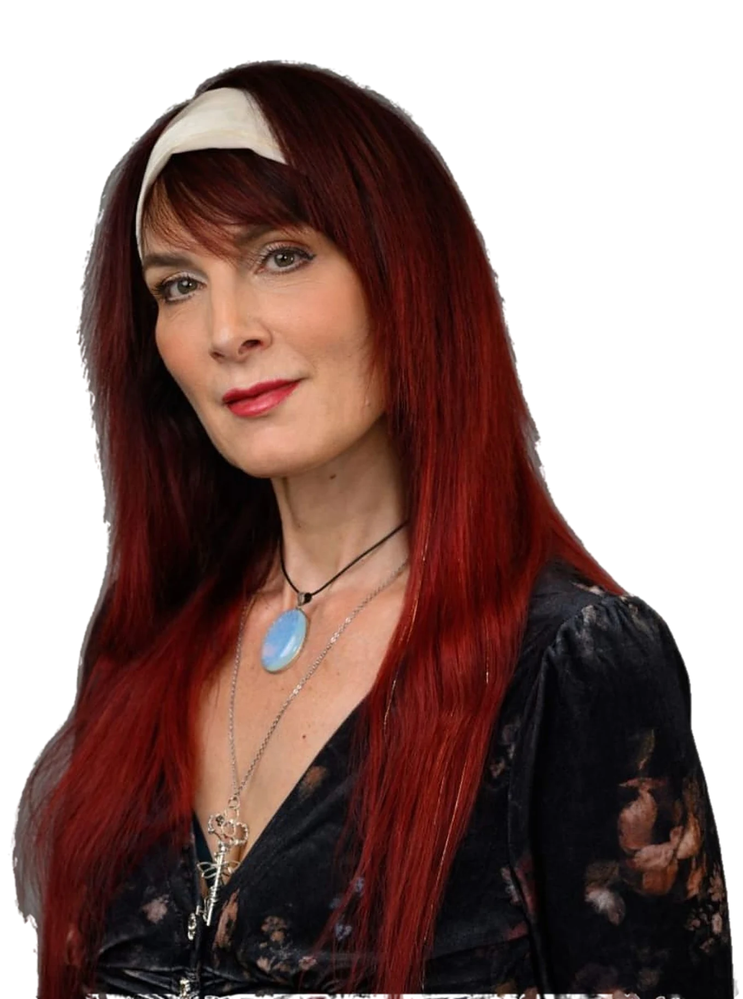
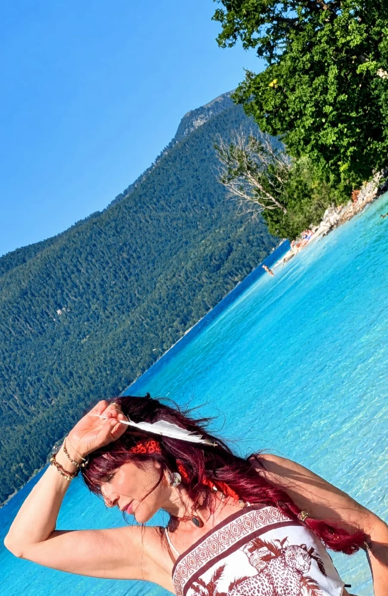
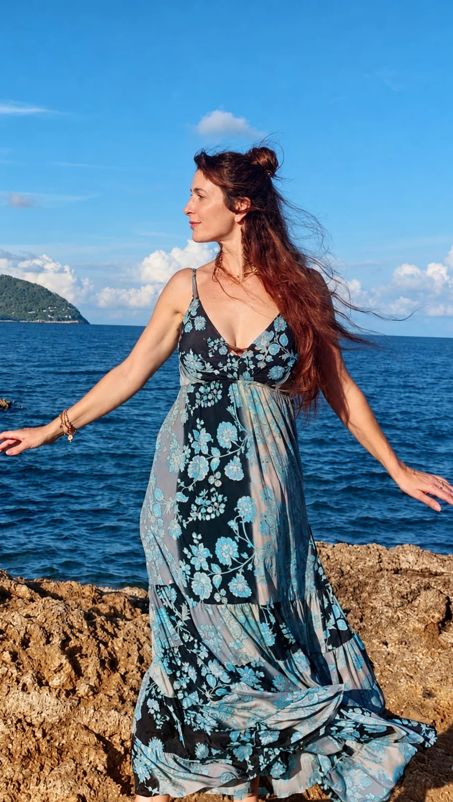
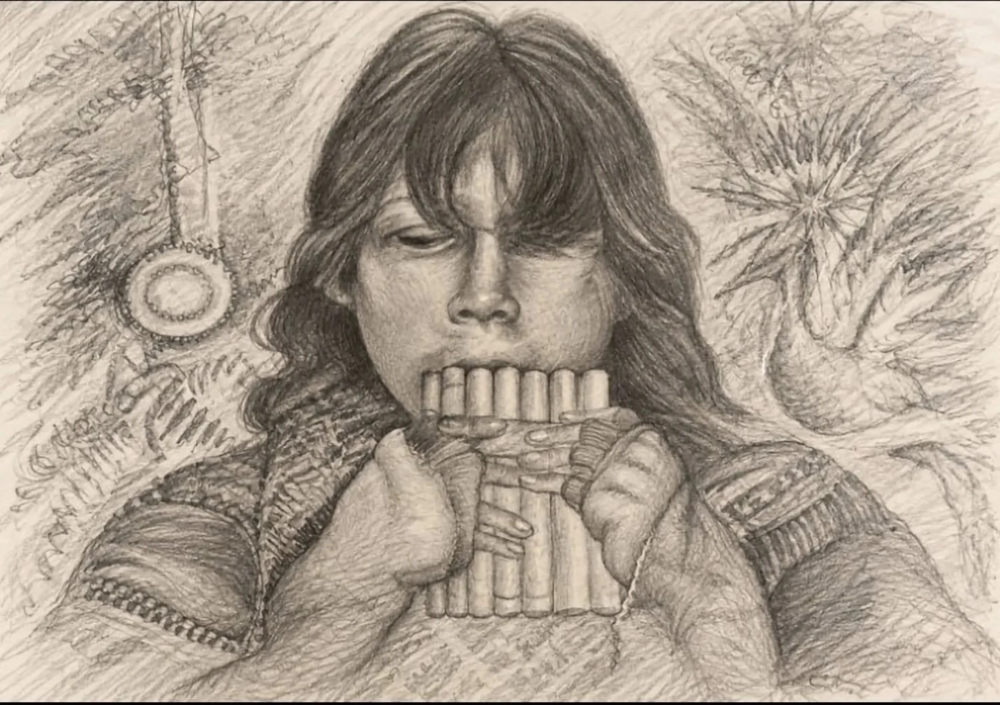
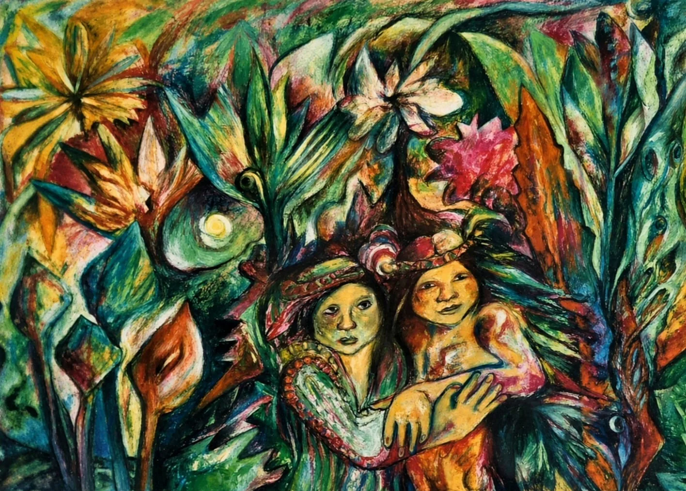

Über mich
Über mich ganz persönlich
Ich bin Mutter von drei erwachsenen Kindern. Mein Leben ist reich an Erfahrungen. Jede einzelne hat mich wachsen lassen.

Psychische Erkrankungen in meiner Familie haben mich schon früh motiviert, mich mit seelischer Gesundheit und den tieferen Zusammenhängen menschlichen Erlebens auseinanderzusetzen.
Meine jahrzehntelange pädagogische Arbeit, viele Jahre davon im integrativen Bereich, hat meinen Blick auf seelische und familiäre Zusammenhänge geprägt. Kindliches Erleben ist eng verbunden mit dem, was in einer Familie geschieht. Kinder können die Themen der Erwachsenen spiegeln. Diese frühen Prägungen beeinflussen den weiteren Verlauf eines jeden Lebens auf unterschiedliche Art und Weise.
Reflexion und der Wunsch, die Zusammenhänge menschlichen Erlebens zu begreifen, begleiten mich schon mein ganzes Leben.
Was prägt uns?
Was wirkt in uns?
Wie kann daraus Bewusstsein entstehen?
Ich kenne Krisen aus eigener Erfahrung. Eine schwere Depression gehört zu meinem Lebensweg. Sie hat mich innehalten lassen und zu einer tiefen Auseinandersetzung mit mir selbst geführt.
Dabei führte mich mein Weg unter anderem zu C. G. Jung, zur Individuation und zur Schattenarbeit. Immer deutlicher wurde mir, welche Bedeutung das Unbewusste für unsere Entwicklung hat und dass Veränderung dort beginnt, wo wir bereit sind, auch den verborgenen und ungeliebten Anteilen in uns zu begegnen.
Durch meine intensive Beschäftigung mit Psychologie und Psychotherapie habe ich viel Wertvolles gelernt – und zugleich erkannt, dass auch sie an Grenzen kommen können. Besonders dort, wo Verstehen allein nicht ausreicht. Immer klarer wurde mir: Wir sind mehr als unsere Diagnose. Und wir sind mehr als unsere Geschichte. Unsere Erfahrungen prägen uns – aber sie müssen uns nicht festlegen.
Hinter einer Diagnose, hinter Symptomen und hinter unserer Geschichte steht immer ein Mensch, der mehr ist als das, was ihm widerfahren ist.

Als bereichernd und wertvoll empfinde ich, wie Lebensthemen und Fragen in der Integralen Tanz- und Ausdruckstherapie durch authentische Bewegung und kreativen Ausdruck in Fluss kommen. Was lange im Inneren gebunden war, darf sich zeigen, ausdrücken und lösen. Zugleich blüht die innere schöpferische Kraft wieder auf.
Ich bin eine Reisende – offen, neugierig und bereit, weiterzulernen und über das Vertraute hinauszuwachsen.
Die indigene Heilkunst wurde zur tiefsten Wegmarke meines Lebens. In ihr fand ich die Essenz dessen, wonach ich lange gesucht hatte. Für mich bündelt sich darin alles, was auf meinem bisherigen Weg bereits angelegt war – auch meine ausgeprägte Intuition und meine besondere Feinspürigkeit für das, was nicht unmittelbar sichtbar ist. Heute lebe und arbeite ich aus dieser inneren Wahrheit heraus mit dem tiefen Wissen, dass die sichtbare und die unsichtbare Welt miteinander verbunden sind und wir uns in beiden bewegen. Dieser Weg prägt meine Arbeit und mein Leben.
Jeder persönliche Weg ist individuell.
Fühl dich willkommen – mit deinem Weg, deinen Themen und allem, was dich gerade bewegt.
Wenn du magst, erzähl mir gerne mehr über dich.
Schreib mir ganz unverbindlich über WhatsApp.
Ich freue mich auf deine Nachricht.
Über WhatsApp schreibenAus dem Atelier
Von der Fantasie zur Brücke

Als ich dem Vater meiner Kinder begegnete, der aus Peru stammt, kam ich erstmals intensiver mit der indigenen Kultur und ihren Traditionen in Berührung. Davon inspiriert begann ich zu malen.

Rückblickend erkenne ich darin eine Brücke zu meinem späteren Weg. Ein stiller Übergang. Fast unmerklich.
Die indigene Heilkunst ist für mich kein Zufall. Sie ist die natürliche Fortsetzung dessen, was immer schon da war.
